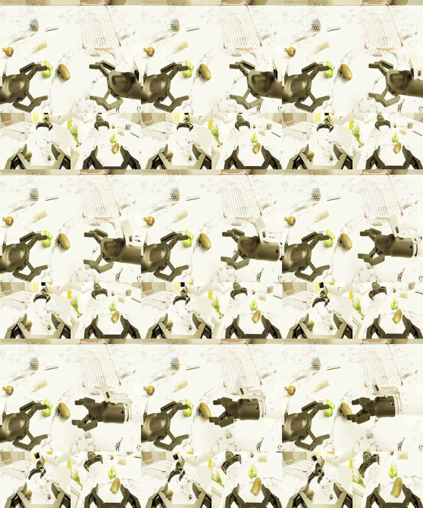
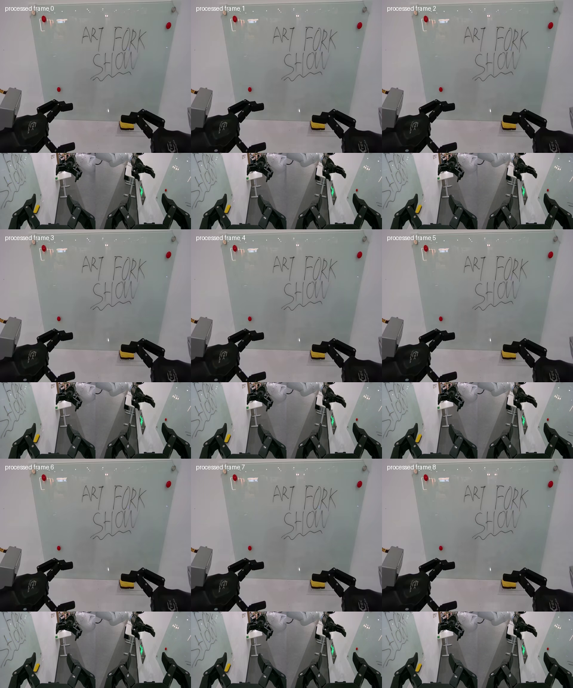
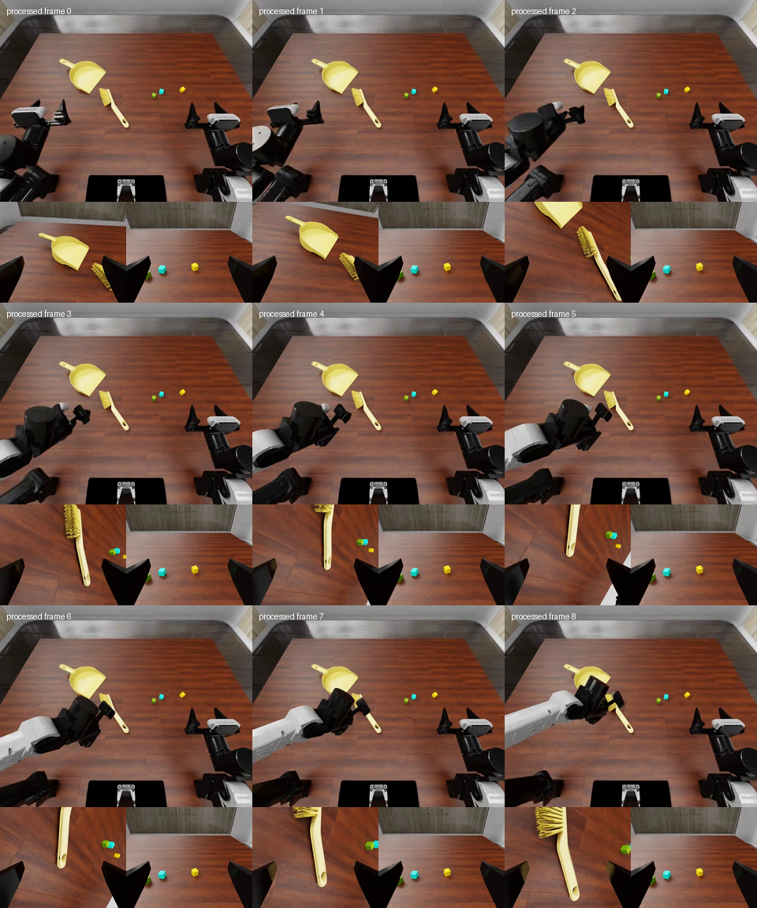
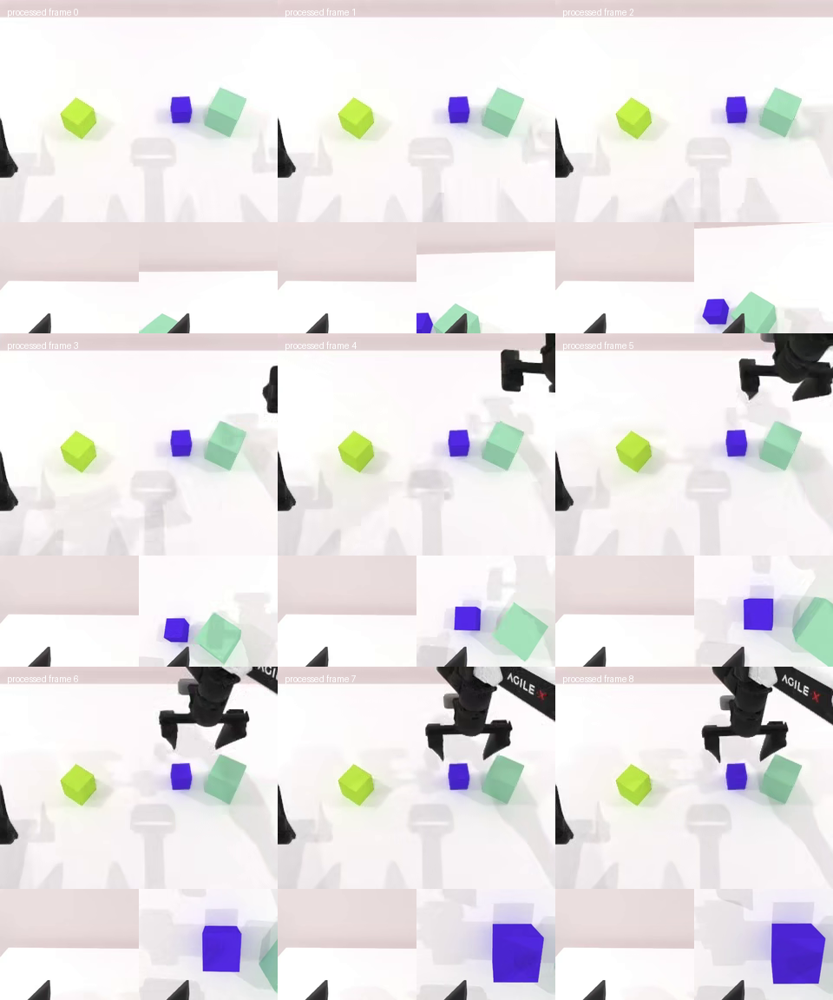

MoraVLA pretrain vs OpenWAM-α：已验证的数据处理链
本页是在原始 pretrain_vs_openwam_comparison.html 基础上针对本次实现整理的离线报告；原文件未被覆盖。
先说结论
2026-09-23 对照的历史入口是 launch/qwena1_nogen/pretrain.sh，加载 launch/qwena1_nogen/train_files/pretrain.yaml。该 recipe 使用 36D、action_mode: delta、eef_frame: head_camera，训练时以 0.5 概率切到 wrist frame；脚本默认覆盖为 FRAME_SAMPLE_FPS=5 并从 ${DATA_ROOT_DIR}/stats 读取 external stats。当前 MoraVLA 主入口 launch/moravla/pretrain.sh 使用 96D、50 步 chunk，不能与该历史 recipe 混为一谈。
OpenWAM-α foundation checkpoint 是 80D action/state head。因此本实现复用 MoraVLA 已生成的 EEF 字段和显式 frame/stats 思路，但不直接复用其 36D delta；MoraVLA 代码库其他位置存在的 96D layout 也不是此启动脚本的输出，更不能直接送进 OpenWAM。
MoraVLA qwena1_nogen
本次 OpenWAM-α 适配
逐项对比
| 项目 | MoraVLA 实际启动配置 | OpenWAM-α 本实现 |
|---|---|---|
| 入口 | qwena1_nogen/pretrain.sh | scripts/train.py --config-name openwam_alpha_v0_1_smoke |
| 动作语义 | head/wrist-frame delta | absolute EEF20：由下一帧 state 构造 action，再归一化（2026-10-07 更新） |
| 模型宽度 | 36D；另有代码路径定义 96D | 80D unified head |
| 时间采样 | offset [-15,0,15]，启动 FPS 5 | 33 steps，视频 stride 4 得九帧 |
| 统计量 | external stats root | 只对 profile 的 episode 0/1 生成并校验 provenance |
| 失败策略 | 可配置 skip invalid | EEF/schema/stats/shape 非法立即失败，不回退 joint |
四类真实样例
均已走完 parquet → EEF20 → normalization → 80D scatter → forward input 链。




验收边界
训练只做两步 smoke；推理是 RoboDojo/RobotWin 各一个离线 open-loop chunk。它证明配置、数据、checkpoint 和 generate 接口能连通，不代表闭环成功率或模型质量。